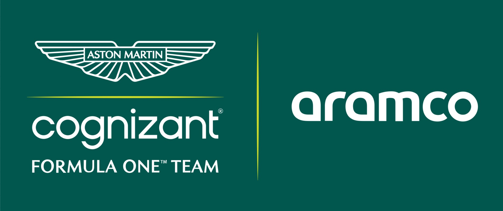

Los primeros pasos de Aston Martin
Aston Martin es una de las marcas más reconocidas de la industria automotriz británica. Aunque la marca ya había tenido participación en la Fórmula 1 durante la década de 1950, su presencia moderna en la categoría comenzó muchos años después.
El origen del actual equipo
El actual equipo Aston Martin tiene sus raíces en la escudería Jordan, que posteriormente pasó por diferentes nombres como Midland, Spyker y Force India. En 2018, el equipo fue adquirido por un grupo liderado por Lawrence Stroll y pasó a competir como Racing Point.
El regreso a la Fórmula 1 en 2021
En 2021, Racing Point pasó a convertirse oficialmente en Aston Martin Cognizant Formula One Team. Este cambio significó el regreso de Aston Martin como fabricante y marca oficial a la Fórmula 1. El equipo comenzó aquella temporada con Sebastian Vettel y Lance Stroll como pilotos.
La llegada de Fernando Alonso
Uno de los momentos más importantes de la historia reciente del equipo ocurrió en 2023 con la llegada de Fernando Alonso. El piloto español consiguió varios podios durante esa temporada y ayudó a Aston Martin a convertirse en uno de los equipos más competitivos de la parrilla.
El proyecto de Lawrence Stroll
Lawrence Stroll impulsó un proyecto a largo plazo para convertir a Aston Martin en una escudería capaz de luchar por victorias y campeonatos. Como parte de este proyecto se desarrollaron nuevas instalaciones, incluyendo el moderno Aston Martin Technology Campus en Silverstone.
Adrian Newey y el futuro del equipo
El proyecto de Aston Martin tomó todavía más fuerza con la incorporación de Adrian Newey, uno de los diseñadores más exitosos de la historia de la Fórmula 1. Su llegada forma parte de la estrategia del equipo para construir un monoplaza capaz de competir por los campeonatos en las próximas temporadas.
El gran cambio técnico de 2026
A partir de 2026, Aston Martin inició una nueva etapa técnica con Honda como socio oficial para el suministro de unidades de potencia. Además, el equipo trabaja con nuevas regulaciones técnicas y aerodinámicas que buscan mejorar sus posibilidades de luchar por las posiciones más importantes de la Fórmula 1.
Una escudería con ambición de campeonato
Aston Martin todavía busca conseguir su primer campeonato de Constructores y su primer campeonato de Pilotos en la Fórmula 1. Sin embargo, la inversión realizada en tecnología, instalaciones, personal técnico y pilotos demuestra que el objetivo principal del equipo es convertirse en una escudería capaz de luchar regularmente por victorias y campeonatos.